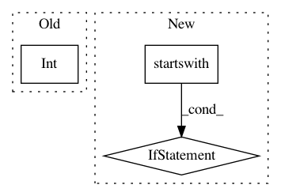

f2889ca90ddd60b19070b7e8fbcb0867ae4c47ed,setup.py,,,#,25
Before Change
gpu_available = len(out) > 0
// check python version
py3_ver = int(platform.python_version().split(".")[1])
// Tensorflow version (make sure CPU/MKL/GPU versions exist before changing)
tf_version = "1.12.0"
tf_mkl_url = "https://storage.googleapis.com/intel-optimized-tensorflow/tensorflow-{}-cp3{}-cp3{}m-linux_x86_64.whl"
After Change
// Tensorflow version (make sure CPU/MKL/GPU versions exist before changing)
for r in install_requirements:
if r.startswith("tensorflow=="):
tf_version = r.split("==")[1]
// default TF is CPU
chosen_tf = "tensorflow=={}".format(tf_version)
// check system is linux for MKL/GPU backends
if "linux" in sys.platform:
system_type = "linux"
In pattern: SUPERPATTERN
Frequency: 3
Non-data size: 3
Instances
Project Name: NervanaSystems/nlp-architect
Commit Name: f2889ca90ddd60b19070b7e8fbcb0867ae4c47ed
Time: 2019-05-01
Author: peter.izsak@intel.com
File Name: setup.py
Class Name:
Method Name:
Project Name: home-assistant/home-assistant
Commit Name: 04aa4e898a31e459a4f478989ea13c6d6f3efd97
Time: 2016-12-11
Author: glance@acc.umu.se
File Name: homeassistant/components/media_player/denon.py
Class Name: DenonDevice
Method Name: update
Project Name: Microsoft/nni
Commit Name: 1c6f1efa8b297f73bde09f8bcbc876439b8edf4e
Time: 2020-04-26
Author: 27178119+squirrelsc@users.noreply.github.com
File Name: tools/nni_gpu_tool/gpu_metrics_collector.py
Class Name:
Method Name: check_ready_to_run